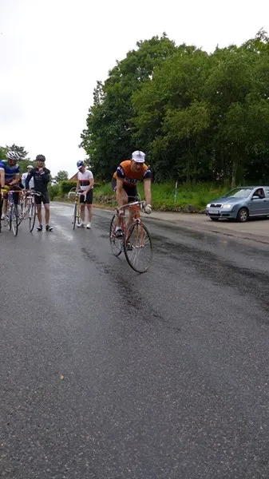
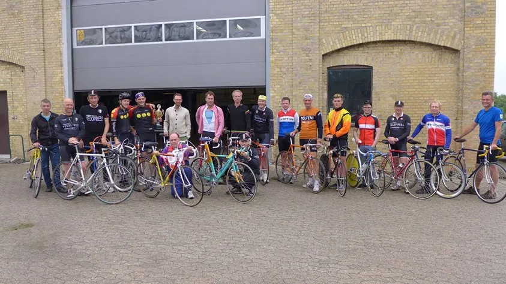

Niels vinder Velopress Chrono 2015

Squadra Moltenis Niels Bjørnsteen vandt i dag Campionato Velopress di Cronometro Individuale (Velopress Chrono) 2015 – enkeltstart for vintage-cykler. Niels vandt kategorien for 1970’er cykler.
Øvrige vindere i kategorierne blev:
- Kategori 2: 1980’er cykler blev vundet af Jørn Nielsen
- Kategori 3; 1990’er specialfremstillede TT-cykler blev vundet af Hasse Rømer.
Mesterskabet blev kørt på en 9,5 km rundstrækning ved Skjoldnæsholm ved Jystrup på Sjælland.
Rundstrækningen, der skulle gennemkøres 2 gange, bød på en ret teknisk rute. En del sving og en masse små bakker. Og i dagens anledning var asfalten plaskvåd.

Løbet blev dog kørt i tørvejr.
Tak til Jacob Ingemann Hansen for et super godt arrangement – og tak til Anders Malte Jørgensen for godt følgeskab på en hyggelig tur.
